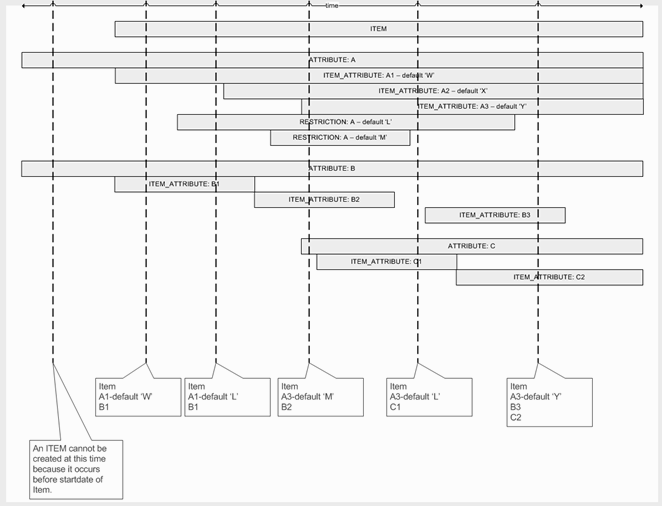
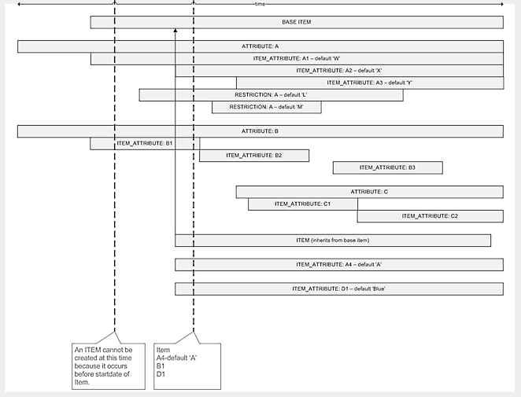

All Catalog definitions are constantly changing, so having a mechanism to show their previous state can be beneficially during the project life cycle. When changes are made to the objects' content, the Catalog keeps the change as a new version. The Catalog does not clone the items; instead, it clones the instances of the changed objects and associations. This way, making versions takes minimum storage capacity and is fast.
Catalog items are not really versioned; rather, it is the details of the item (such as an item attribute) which are versioned. So, while both the item object and the item attribute object have a start date, the interpretation of the date is conceptually different:
Note: The following catalog objects do not have versions (are non-versioned): Attribute Types, Context Types, and Association Types. All other objects as well as all associations (see below) have versions (that is, they may have different structure and content in different periods).
All Catalog definitions evolve in time, but their previous state should be reliably stored and easily accessed. The Catalog can change any single aspect of an object's content and keep the change as a new version.
The Catalog operations are performed always in the context of a timestamp called API request time (that is, the Catalog API specifies the time for which the request is performed). In many cases, the API request time is the current timestamp (for example when ordering new services). In some cases, the timestamp may be when the original order was made (when changing or canceling existing services). The Catalog provides a "snapshot" of the item as it is (or has been) at the moment specified by the API request time. This item is said to be applicable for the API (or for the API request time).
The Catalog versioning mechanism measures the time in units called Catalog time unit. While the APIs can specify any timestamp, it is converted internally to Catalog time using the Catalog time unit. The Catalog time unit is basic application property and is stored in the Product Property DB table under key CTLG_TIME_UNIT. It is measured in hours and can have value of 1, 2, 3, 4, 6, 12 and 24. By default, the Catalog time unit is 24 hours.
Note: If the Catalog time unit has incorrect value in the database, the Catalog will not start and an error message will be recorded in the application error log file. Reducing the time unit's value in the database has no functional impact on the Catalog, but may slightly reduce the performance. Before changing the time unit, all Catalog nodes must be shut down.
The Catalog can change its content dynamically at any time, but the changes become visible (depending on the corresponding start dates) only at the beginning of the corresponding Catalog time unit. This way, the Catalog time unit specifies the smallest time interval between the changes in the Catalog definitions and, for version 5.x, it cannot be less than an hour.
The versioned Catalog elements have a life span for which they are usable. The life span is defined by a mandatory starting timestamp and an optional ending timestamp. In the latter case, the life span is unlimited in future. The start and end timestamps of the life span are automatically converted to Catalog times.
Using the life span, the Catalog can easily determine whether an object or association is alive for a given API call. The Catalog object or association is alive if:
Life span start <= API request time <= Life span end timestampwhere every timestamp is converted to Catalog time using the Catalog time unit.
The following diagram illustrates how for an arbitrary item, multiple versions of item attributes and attribute restrictions may exist.

The following diagram is similar to the previous one, except that it illustrates a situation where the ITEM extends from a base item.

The getItemVersion API is available to get all versions of an item. The following features are supported by this API:
For more information about this API, see the JavaScripting guide under JavaScripting Extensions > JavaScript Documentation in the help documentation.
When you import a file, objects are updated or added but not removed. As such, importing and exporting are not suitable for moving data between systems while projects are still in Definition status. Also, while a project is in the Definition status, it is easy to make a small date change without necessarily being aware of it. In such a situation, when a file is imported, you can easily introduce new versions without intending to do so. For these reasons, it is recommended that a project in Definition status be dropped prior to being imported.
Exporting a project allows you to save a project in XML format to allow movement of the project from one database to another. The file format is MS Excel XML spreadsheet format. This allows you to view catalog details in Excel. Modification of the file is not recommended.